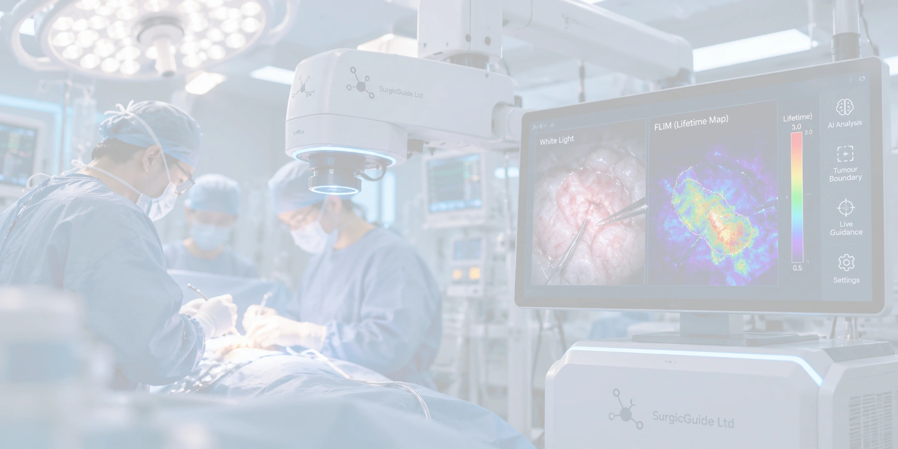

Precision cancer surgery
Real-Time Surgical Guidance with AI-integrated FLIM System
Exploring the intersection of fluorescence lifetime imaging and artificial intelligence.

AI-integrated FLIM System · concept visualAbout SurgicGuide
Technology with a clear purpose.
SurgicGuide Limited is a biotech company based in Hong Kong. Our aim is to advance novel technologies for precision cancer surgery. Our research focuses on using Fluorescence Lifetime Imaging Microscopy (FLIM) as a tool for distinguishing tumours from normal tissues. By combining FLIM with artificial intelligence (AI), our cutting-edge technology provides surgeons with real-time guidance in tumour resection, thereby reducing the risk of positive surgical margins and tumour recurrence.
Our vision
Better tools. More informed decisions.
Hong Kong is one of the most densely populated cities in the world. As population ageing is becoming an increasingly significant challenge, the demand on the healthcare system of Hong Kong remains substantial. We recognise the critical role of surgeons in delivering high-quality care and we believe that they deserve better tools to support decision-making. By integrating FLIM with machine learning, surgical efficiency can be remarkably improved, enabling hospitals to treat more patients despite limited clinical capacity.
Explore the science
From cell metabolism
to surgical insight.
Explore the role of NAD(P)H in metabolism and how it enables cancer detection with FLIM
Our product
AI-integrated
FLIM System
Learn about the proposed system, its operating principles and the research behind it.
Explore the system